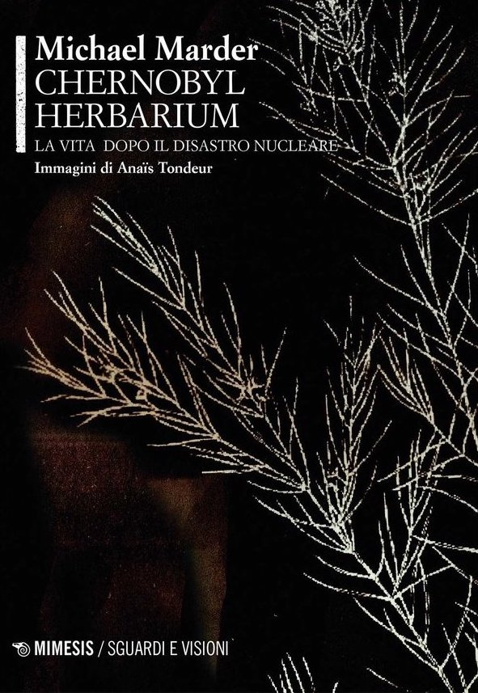
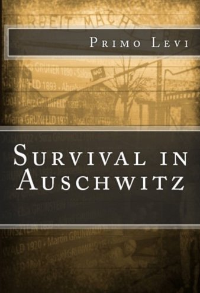

Chernobyl Prayer: A Chronicle of the Future by Svetlana Alexievich
Also known as Voices from Chernobyl, this book by Svetlana Alexievich is a compilation of
interviews with people affected by the Chernobyl disaster. The title Chernobyl Prayer
reflects the spiritual and existential dimensions of the tragedy. The book captures the....
Read More

The Chernobyl Herbarium: Fragments of an Exploded Consciousness by Michael Marder
The Chernobyl Herbarium is a unique exploration of the Chernobyl disaster, blending art,
philosophy, and environmental science. Michael Marder and Anaïs Tondeur create a dialogue
between text and image, reflecting on the ecological and philosophical implications of the
....
Read More

Survival in Auschwitz by Primo Levi
Survival in Auschwitz (originally titled If This Is a Man) is Primo Levi’s harrowing account
of his time in the Auschwitz concentration camp. Levi, an Italian Jew, survived the camp and
later documented the dehumanizing experiences he endured. His narrative is a powerful
....
Read More